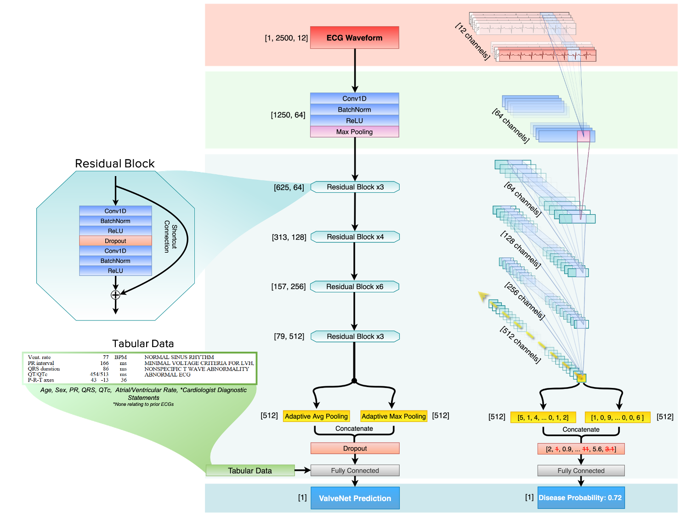

IntroECG GitHub
A full-process library for deep learning on 12-lead electrocardiograms
Click here to go to the repo1-Waveform Extraction

Scripts and tutorial for extracting raw ECG waveforms from GE Muse or PDFs of ECGs. It also includes examples of how to display and review your ECG data.
2-Generating Synthetic ECG Data
Generate your own synthetic electrocardiograms. Comes with the ability to alter many different aspects of the waveform to test different hypotheses.
3-Preprocessing
Key preprocessing steps for cleaning and normalizing ECG data.
4-Models
Different example models we've built to showcase approaches that work for electrocardiograms, in pytorch and tensorflow/keras.
5-Training with Ignite and Optuna
A framework built on PyTorch Ignite using Optuna to allow for rapid experimentation and displaying your results using Tensorboard
6-Putting it into Practice: The ValveNet Model
See the notebooks we used for generating our figures and key results on our valvular heart disease model published in JACC.
Development Team
Lead Developers:
-Pierre Elias
-Adler Perotte
Contributors:
-Vijay Rajaram
-Shengqing Xia
-Alex Wan
-Junyang Jiang
-Yuge Shen
-Han Wang